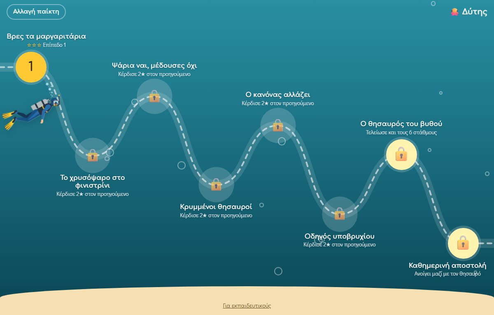

Βουτιά Συγκέντρωσης
Ένα δωρεάν παιχνίδι εξάσκησης της προσοχής και της συγκέντρωσης!
Η προσοχή δεν είναι μία ικανότητα αλλά πολλές. Άλλο να συγκεντρωθείς σε κάτι για λίγα δευτερόλεπτα, άλλο να κρατήσεις την προσοχή σου για ώρα, κι άλλο να αγνοήσεις όσα σε αποσπούν γύρω σου. Η «Βουτιά Συγκέντρωσης» τις εξασκεί μία μία, με τη σειρά.
Το παιδί γίνεται δύτης και κατεβαίνει στον βυθό, στάθμο με στάθμο. Σε κάθε βάθος το περιμένει μια διαφορετική πρόκληση και κάθε στάθμος ανοίγει μόλις κατακτηθεί ο προηγούμενος.
Οι έξι στάθμοι
- Βρες τα μαργαριτάρια — εστιασμένη προσοχή
Το παιδί εντοπίζει και πατά έναν στόχο μόλις εμφανιστεί. - Το χρυσόψαρο στο φινιστρίνι — διατηρούμενη προσοχή
Παρακολουθεί μια σειρά από ψάρια και αντιδρά μόνο στο χρυσόψαρο. - Ψάρια ναι, μέδουσες όχι — αναστολή της παρόρμησης.
Πατά τα ψάρια, συγκρατείται στις μέδουσες και μαθαίνει να περιμένει το στρείδι να ανοίξει. - Κρυμμένοι θησαυροί — επιλεκτική προσοχή.
Ψάχνει συγκεκριμένα αντικείμενα ανάμεσα σε όλο και περισσότερα που τους μοιάζουν. - Ο κανόνας αλλάζει — εναλλασσόμενη προσοχή.
Ταξινομεί με βάση το χρώμα ή το σχήμα, και ο κανόνας αλλάζει στην πορεία. - Οδηγός υποβρυχίου — διαιρεμένη προσοχή.
Οδηγεί το υποβρύχιο αποφεύγοντας βράχους και ταυτόχρονα παρακολουθεί το παράθυρο.
Όταν ολοκληρωθούν και οι έξι, ανοίγει ο θησαυρός του βυθού με ένα δίπλωμα Δύτη Συγκέντρωσης για εκτύπωση, καθώς και η καθημερινή αποστολή: ένας σύντομος γύρος 8 - 10 λεπτών με λίγο από κάθε στάθμο που δίνει ένα μαργαριτάρι κάθε μέρα εξάσκησης.
Τι το κάνει διαφορετικό
- Προσαρμόζεται στο παιδί. Δέκα επίπεδα σε κάθε στάθμο. Η δυσκολία ανεβαίνει όταν το παιδί τα πηγαίνει καλά και κατεβαίνει όταν δυσκολεύεται, ώστε να μένει πάντα στο σημείο που η προσπάθεια αποδίδει.
- Άμεση ανατροφοδότηση. Κάθε απάντηση παίρνει απάντηση αμέσως, με κίνηση, ήχο και πόντους.
- Διδάσκει στρατηγική, όχι μόνο ταχύτητα. Πριν από κάθε γύρο το παιδί διαλέγει ένα «κόλπο», όπως το «Σταματώ, κοιτάζω, πατώ». Στο τέλος αξιολογεί το ίδιο πόσο καλά πρόσεξε και σκέφτεται πού αλλού μπορεί να το χρησιμοποιήσει: στο γράψιμο, στο διάβασμα, όταν ακούει τη δασκάλα.
- Σύντομοι γύροι και διαλείμματα. Κάθε γύρος κρατά λίγα λεπτά, και μετά από αρκετή ώρα παιχνιδιού το παιχνίδι προτείνει διάλειμμα.
Για εκπαιδευτικούς και γονείς
Υπάρχει ξεχωριστή σελίδα, προστατευμένη με μια απλή ερώτηση ώστε να μην μπαίνουν τα παιδιά. Εκεί καταγράφεται για κάθε γύρο η ακρίβεια, οι παραλείψεις (ένδειξη απροσεξίας), τα βιαστικά πατήματα (ένδειξη παρορμητικότητας), ο μέσος χρόνος αντίδρασης και η σταθερότητά του, καθώς και η επίδοση στο πρώτο σε σχέση με το δεύτερο μισό του γύρου. Μπορείτε να ρυθμίσετε τα επίπεδα με το χέρι και να κατεβάσετε όλα τα δεδομένα σε αρχείο PDF, χρήσιμο για την τεκμηρίωση προόδου.
Το παιχνίδι υποστηρίζει πολλά προφίλ, άρα ένα tablet μπορεί να εξυπηρετήσει όλη την τάξη. Τα δεδομένα παραμένουν αποθηκευμένα μόνο στη συσκευή σας.
Προτεινόμενη χρήση: 10–15 λεπτά, 3–5 φορές την εβδομάδα. Το παιχνίδι είναι εργαλείο εξάσκησης και υποστήριξης, όχι θεραπευτική ή διαγνωστική παρέμβαση και δεν υποκαθιστά την καθοδήγηση ειδικού.
Δωρεάν, χωρίς εγγραφή και χωρίς διαφημίσεις. Παίζεται σε υπολογιστή και tablet.
▶ Παίξε
▶ Παίξε